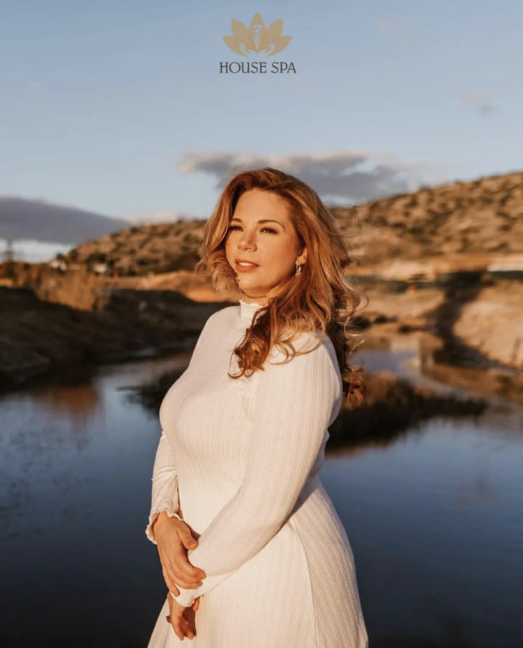
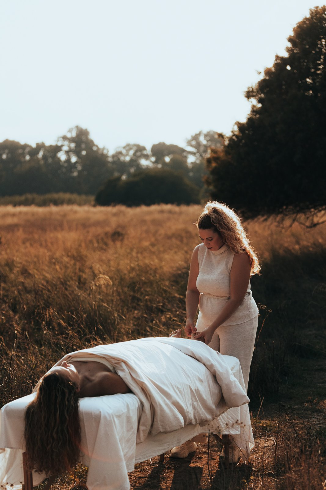
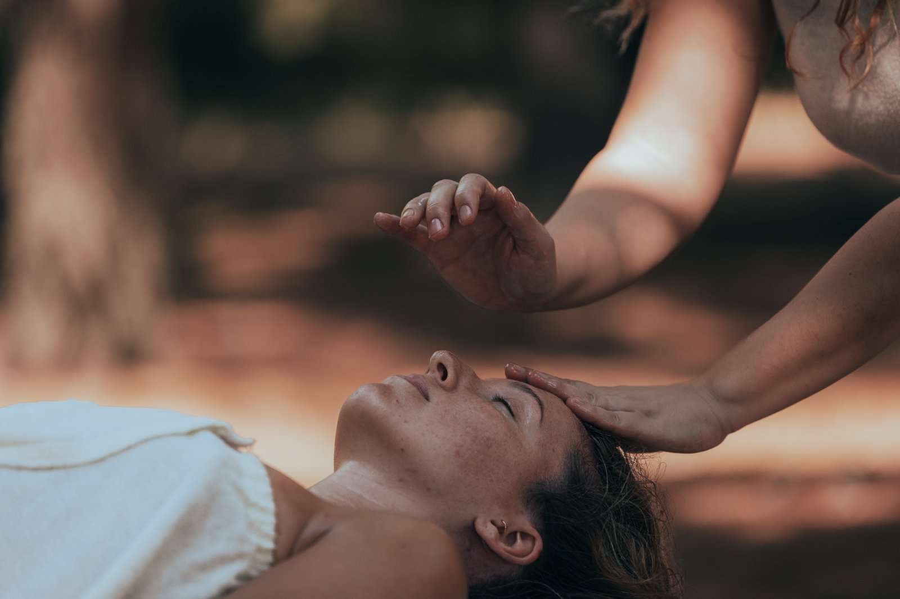
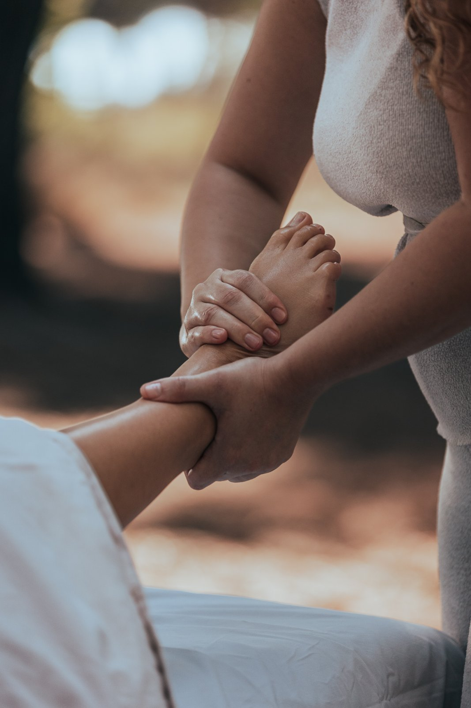
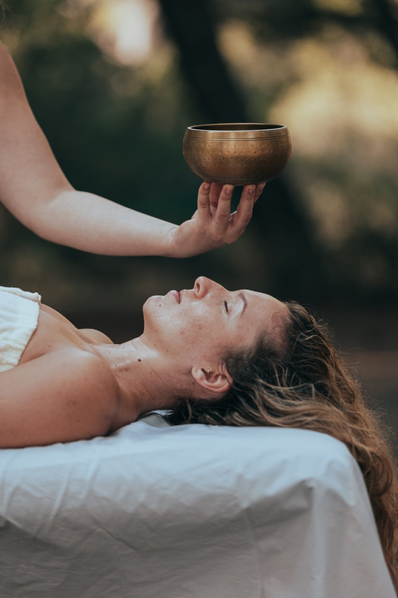
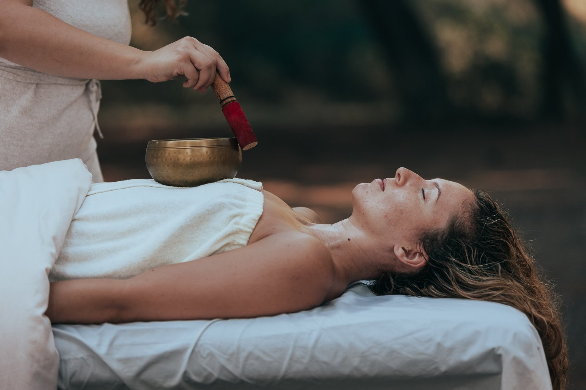
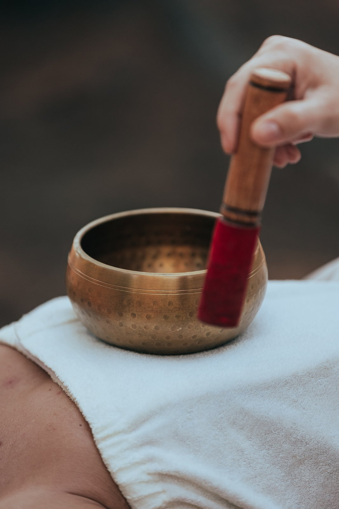
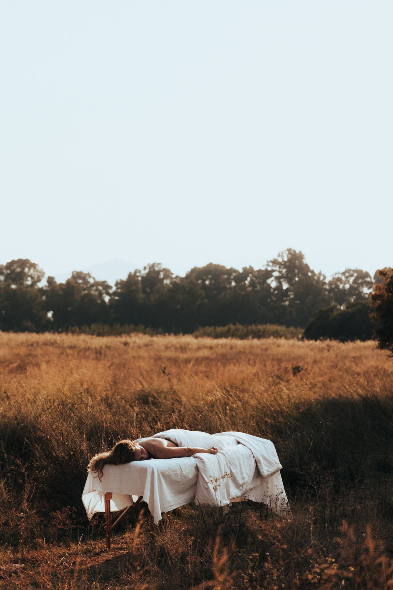
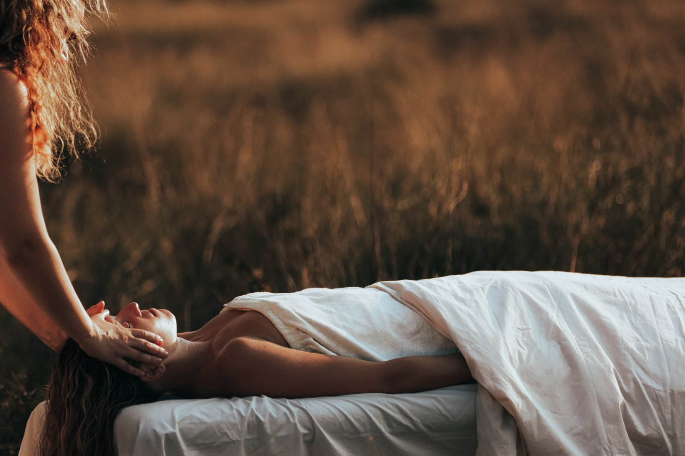
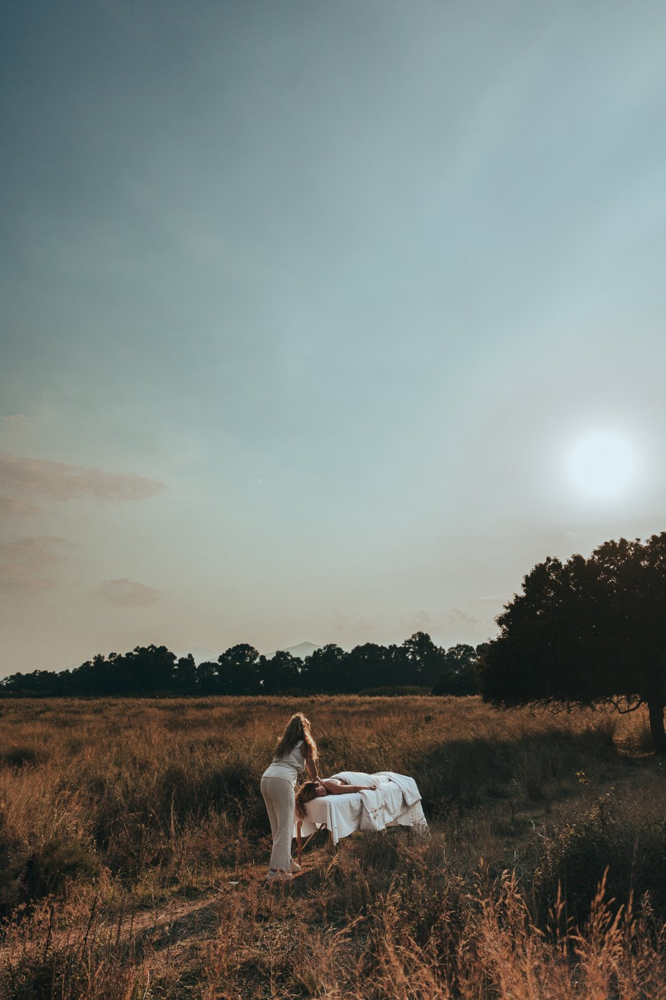

ΕΙΜΑΙ Η ΙΩΑΝΝΑ ΒΑΡΔΑΚΗ, ΤΟ ΠΑΘΟΣ ΜΟΥ ΓΙΑ ΤΗ ΦΥΣΙΚΗ ΟΜΟΡΦΙΑ ΚΑΙ ΤΗΝ ΟΛΙΣΤΙΚΗ ΕΥΕΞΙΑ
ΜΕ ΟΔΗΓΗΣΑΝ ΣΤΟ ΝΑ ΑΦΙΕΡΩΘΩ
ΣΤΗΝ ΕΚΠΑΙΔΕΥΣΗ ΚΑΙ ΤΗΝ ΠΡΑΚΤΙΚΗ ΕΦΑΡΜΟΓΗ ΘΕΡΑΠΕΙΩΝ ΠΟΥ ΑΝΑΔΕΙΚΝΥΟΥΝ ΤΗ ΣΥΝΟΛΙΚΗ ΕΥΕΞΙΑ ΤΟΥ ΣΩΜΑΤΟΣ ΚΑΙ ΤΟΥ ΠΝΕΥΜΑΤΟΣ.



ΕΚΠΑΙΔΕΥΣΗ ΣΤΗΝ ΑΙΣΘΗΤΙΚΗ
Έχω ολοκληρώσει την εκπαίδευσή μου στην Αισθητική με ειδίκευση στις φυσικές και εναλλακτικές θεραπείες.
|
ΘΕΡΑΠΕΥΤΙΚΗ ΜΑΛΑΞΗ
Έχω εκπαιδευτεί στην τεχνική της θεραπευτικής μάλαξης, η οποία εστιάζει στη χαλάρωση των μυών, την ανακούφιση από το άγχος και την ενίσχυση της
κυκλοφορίας του αίματος. Αυτή η προσέγγιση βοηθά στην αποκατάσταση της ισορροπίας στο σώμα και στην προαγωγή της συνολικής υγείας.
ΕΞΕΙΔΙΚΕΥΣΗ ΣΤΗΝ ΚΡΥΣΤΑΛΛΟΘΕΡΑΠΕΙΑ ΚΑΙ ΗΧΟΘΕΡΑΠΕΙΑ
Η εκπαίδευσή μου περιλαμβάνει τη χρήση κρυστάλλων και ήχων για τη θεραπεία του σώματος και της ψυχής.
Αυτές οι τεχνικές με βοηθούν να προσφέρω θεραπείες που εστιάζουν στην ενεργειακή ισορροπία και στην αποκατάσταση της εσωτερικής γαλήνης.
|
ΑΙΣΘΗΤΙΚΟΣ ΒΕΛΟΝΙΣΜΟΣ
Είμαι εξειδικευμένη στον αισθητικό βελονισμό, μια φυσική μέθοδο που βοηθά στη βελτίωση της κυκλοφορίας, στη σύσφιξη του δέρματος και στην
αποκατάσταση της φυσικής λάμψης.






ΤΕΧΝΙΚΕΣ ΜΑΣΑΖ
Έχω εκπαιδευτεί σε διάφορες τεχνικές μασάζ που προάγουν τη χαλάρωση, την αποτοξίνωση και τη νεότητα του δέρματος.
Από τη λεμφική αποστράγγιση μέχρι το βαθύ μασάζ ιστών, οι τεχνικές μου συμβάλλουν στην υγεία του δέρματος και την αναζωογόνηση του σώματος.
|
ΠΑΡΑΣΚΕΥΗ ΦΥΣΙΚΩΝ ΚΑΛΛΥΝΤΙΚΩΝ
Με ιδιαίτερο ενδιαφέρον για τη φυσική φροντίδα του δέρματος, έχω εκπαιδευτεί στην παρασκευή φυσικών καλλυντικών
και σωστή χρήση αιθέριων ελαίων.